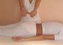

ИЗДАНИЕ 28
Каждый человек по своей природе экстрасенс.
Стоит только создать условия для проявления
этих способностей и они проявятся...
ДИАГНОСТИКА И ЛЕЧЕНИЕ
РАЗВИТИЕ ЭКСТРАСЕНСОРНЫХ СПОСОБНОСТЕЙ
Каждый человек по своей природе экстрасенс. Стоит только создать условия для проявления этих способностей и они проявятся.
Иногда эти способности проявляются после какого-то стресса, заболевания, удара током и другого "толчка", а в основном многие экстрасенсы, колдуны и белые маги стали таковыми благодаря систематическим тренировкам, работе над собой.
Как правило, овладевшие каким-то одним из способов экстрасенсорного восприятия или воздействия, не останавливаются на достигнутом, а идут дальше. Каждая новая грань их многообразных "талантов" достигается меньшими усилиями, чем предыдущая. Это напоминает изучение иностранных языков: каждый последующий язык дается легче, так как он усваивается на базе предыдущих знаний.
Знаменитая Нинель Сергеевна Кулагина, неоднократно демонстрировавшая необыкновенные способности по телекинезу, в том числе дистанционное перемещение стеклянного графина весом 380 граммов, первоначально могла только определять цвета. Сравнительно незначительные тренировки позволили ей усовершенствовать свою способность к кожному зрению настолько, что она научилась определять цвета и читать печатный текст (в том числе газетный) любым открытым участком тела, даже в полной темноте.
Все члены семьи помогали Н. С. Кулагиной в постановке экспериментов и дальнейших тренировках. Нинель Сергеевна ежедневно тренировалась до сильного утомления, головных болей, до позывов к рвоте.
Профессор Л. Л. Васильев, исследовавший способности Кулагиной, высказывал ей предположение, что она, возможно, сможет повторить опыты по телекинезу, проводимые в 1930-1931 г. в Париже. С большим желанием и верой в свои силы Н. Кулагина приступила к новым тренировкам.
Она знала чего хочет достигнуть - переместить черный конверт, находясь от него на расстоянии двух метров, но не знала того особого состояния и ощущения, которые сопутствуют этому, не знала как именно это сделать. Она просто сосредоточенно смотрела на конверт, полностью сосредоточившись на поставленной цели, как при аутотренинге. Долгое время ничего не получалось, были новые и новые попытки. И, наконец, конверт начал двигаться. То особое внутреннее состояние при котором случился телекинез, удалось запомнить и воспроизводить впоследствии при многочисленных демонстрациях телекинеза.
Затем, только путем упорных тренировок Нинель Сергеевна научилась "засвечивать" руками запечатанные фотоматериалы таким образом, что при проявлении на них обнаруживались заданные фигуры: крест, звезда, буквы и т. д.
Каждый ее новый "талант", в том числе и ее способность к исцелению, достигался систематическими тренировками.
Даже небольшой перерыв в занятиях сильно отбрасывал назад. Вышеперечисленные способности с трудом восстанавливались примерно через месяц тренировок.
Борис Владимирович Ермолаев, известный своими эк-страсенсорними способностями рассказывал, что психокинезом (способностью дистанционно удерживать в воздухе небольшие предметы), он овладел за 2 недели упорных тренировок под руководством своего знакомого, который умел это делать.
Неспроста в настоящих практических курсах по магии даются рекомендации "взывать часто", повторять снова и снова свои ритуалы, до тех пор пока не получится, работать ежедневно. Некоторые заклинания повторяются до 100 раз подряд.
Один из основных путей развития экстрасенсорных способностей по исцелению других - это овладение методами аутотренинга, самогипноза, развитие яркого образного воображения, способности к концентрации своего внимания, способности к накоплению в своем организме биоэнергии и управлению ею.
НАБОР ЭНЕРГИИ. Экстрасенсы и белые маги в первую очередь лечат энергетику или душу человека, а она уже -биологическую структуру организма. Если вовремя не снять наговоры, сглаз, испуг, не откорректировать биоэнергетический каркас, то происходит перерождение энергетических нарушений в биологические.
Белый маг восстанавливает нарушенную гармонию пациента с природой, устраняет нарушения на энергетическом уровне.
Многие Молитвы и заговоры вполне известны и доступны каждому, но эффект дают не всегда, а только в том случае, если они правильно применяются.
Эти молитвы и заклинания служат для самонастройки мага, позволяющей сконцентрировать свои мысли. Именно концентрация собственной мысли и дает выход биоэнергии, способной творить чудеса.
Воздействуя на других людей с помощью энергетики, экстрасенс разряжается сам, поэтому он нуждается в периодическом восполнении затраченных ресурсов биоэнергии, иначе он может вызвать в своем организме энергетический дисбаланс и нанести ущерб собственному здоровью.
Экстрасенсы "заряжаются" различными способами: от солнца, космоса, земли, воды, деревьев и других энергетических систем, в зависимости от индивидуальных способностей и личного предпочтения.
Не овладев навыками восстановления биоэнергии ни в коем случае не приступайте к лечению.
ПОМНИТЕ:
- Накопление энергии лучше всего происходит у челове
ка, нервная система которого совершенно спокойна и урав
новешена.
- Раздраженный человек теряет много энергии. Сильные
эмоции страха, зависти ослабляют энергетику. Вырабаты
вайте в себе доброту.
- При наборе энергии одной из важнейших составных
частей любого способа накопления энергии организмом
является
ОБРАЗНОЕ ПРЕДСТАВЛЕНИЕ ПРОЦЕССА НАКОП
ЛЕНИЯ ЭНЕРГИИ.
- При наборе энергии необходимо суметь прочувство
вать как она вливается в тело, в каждый орган, в каждую кле
точку Чем образнее и ярче представление, тем эффектив
нее набор энергии,
Получение энергии от Солнца. Это наиболее простой способ "подзарядки".
Поднять руки вверх, ладонями к Солнцу, отключиться от всех посторонних мыслей, настроиться на прием энергии и мысленно 7 раз попросить у Солнца энергию. Прочувствовать весь процесс получения энергии, наполнения ею организма до чувства распирания. Семь раз поблагодарить Солнце устно или мысленно, опустить руки.
Получение энергии от Земли. Это один из древних методов, которым пользуются йоги.
Нужно сесть, скрестив ноги. Руки положить на колени, соединив большой и указательный пальцы вместе на обеих руках, а остальные пальцы вытянуть таким образом, чтобы они касались Земли. Установить глубокое дыхание и сосредоточить внимание на мысли о том, что при вдохе энергия Земли поступает через кончики пальцев в тело, а при выдохе преобразуется в биоэнергию человека.
Получение комбинированной энергии от Солнца и Земли. Это желательно делать ранним утром на восходе Солнца в уединенном месте.
Потереть ладони, представляя, что на ладонях открываются входные отверстия каналов для прохождения энергии. Потерев и разогрев ладони, нужно теперь "мысленными руками" помассировать входные отверстия, представляя как они увеличиваются в размерах до размера ладони. "Мысленными руками" нужно гладить и массировать стенки воображаемых каналов обеих рук. Ощутить, как каналы расширяются в диаметре и начинают реагировать на воздействие "мысленных рук". Мысленно создать маленький светящийся шарик, помять его "мысленными руками". Он должен "разбухнуть" до диаметра канала, после чего этот шарик "мысленными руками" как поршнем перемещается вверх и вниз по каналам, прочищая их.
Затем ощутить, как на подошвах открываются входные отверстия каналов, "мысленными руками" помассировать их, до получения отверстия размером на всю ступню. Затем чистка шариком по аналогии с тем, что было сказано выше для рук. Стать лицом на восход, сконцентрироваться в каналах рук и в какой-то момент возникнет ощущение, что руки стали легкими, словно невесомыми. Затем сконцентрироваться в каналах ног и ощутить как они "просыпаются" для приема энергии Земли.
Солнце всходит и его энергия мощными потоками начинает поступать в каналы рук. Правильное ощущение - это ощущение наполнения светом и теплом, ощущение пульсации входных отверстий рук и ног и ощущение мягкой и темной энергии Земли, ощущение гармонии и чистоты. Через несколько минут уходит усталость, возникает ощущение бодрости, прилива сил.
Зарядка энергией Космоса. Поднять руки, представить каналы с отверстиями на ладонях для энергетического шара. Начать медленно делать вдох через каналы рук и надувать эти энергетические шары. Ощутить, как шары вытягиваются в длинный узкий луч и устремляются вверх, к небу, к границам атмосферы, а затем дальше в космос и раскрываются там как цветы. И мгновенно через энергетические лучи энергия космоса втягивается через каналы рук, наполняя тело энергией мирового пространства. Этот метод особенно хорош для ситуаций, когда требуется мгновенно пополнить запасы энергии.
Пополнение энергии при помощи ритмического дыхания. Поставить ноги вместе, сомкнуть пальцы рук. Приступить к йоговскому ритмическому дыханию. Для этого установить ритм дыхания с ритмом биения своего сердца. В зависимости от тренированности вдох может быть растянут от 6 до 15 ударов пульса, выдох делается равным по длительности вдоху, задержка дыхания после вдоха по длительности должна быть равна половине длительности вдоха или выдоха, пауза после выдоха тоже равна задержке дыхания. Т. е., если вдох - 6 ударов, то выдох - 6, пауза после вдоха - 3, пауза после выдоха - 3.
Ни в коем слое нельзя переутомлять себя этим дыханием, все должно происходить свободно с образным представлением поступающей энергии при вдохе из окружающего воздуха, слияния со всем
Космосом.
Во время вдоха энергия вбирается в область груди, при выдохе энергия выдыхается в солнечное сплетение.
Получение энергии из воды. Находясь в воде, устанавливают ритмическое дыхание и представляют, что с вдохом энергия воды поступает через поры в тело, а при выдохе превращается в биоэнергию.
Подзарядка от деревьев. Выберите наиболее могучее дерево со здоровыми блестящими листьями. Обойдите дерево, вызовите в себе чувство симпатии и доброжелательности к дереву, внимательно прислушайтесь к своим ощущениям, уловите доброжелательное отношение дерева к себе. Если таких ощущений не возникает, значит это дерево не подходит.
Найдя дерево, которое "гармонирует" с вами, подойдите к нему на расстояние, при котором "чувствуется" влияние дерева наиболее сильно.
Стоя около дерева, ощутите корни дерева, движение энергии Земли от корней по стволу вверх до кроны дерева. Затем ощутите как космическая энергия поступает через листья и движется по стволу вниз, достигая корней.
Отождествите себя с деревом, мысленно слейтесь с ним. ощутите движение энергии снизу вверх и наоборот. Образно представьте как эта энергия промывает Вас. Промывайте себя таким образом до ощущения внутренней чистоты. После этого мысленно попросите у дерева энергии. Впитывайте энергию, накопленную деревом через свои ладони синхронно со своим вдохом.
Распределение энергии. Распределение по организму энергии можно делать при помощи воображаемой прозрачной плоскости, которую нужно "провести" мысленно через все свое тело, начиная от подошв и до макушки.
Исходное положение: лежа на спине, глаза закрыты, ладони кверху. По мере прохождения плоскости необходимо представлять и чувствовать, как после ее прохождения тело растворяется и исчезает.
Обязательно нужно выводить эту плоскость из тела. В случае если она "застревает" где-то и не идет дальше несмотря на прилагаемые усилия, вынести ее обратным путем "через ноги".
Определение силы собственного биополя. Взять 90 быстропрорастающих семян. Перед посадкой тридцать семян в течение 30 минут облучать своей энергией, излучаемой через ладони с расстояния 5 см. Тридцать семян облучать - 30 минут с расстояния 10 см, тридцать семян не облучать - это контрольная группа.
По всхожести семян и величине ростков легко определить силу собственного биополя и оптимальное расстояние для облучения.
Определение лечебной дозы биополя. Необходимо взять восемь контрольных партий быстропрорастающих семян. Первую облучать в течение 5 минут на оптимальном расстоянии, вторую партию - в течение 10 минут и так далее, удлиняя время на 5 минут для каждой последующей контрольной партии семян. По всхожести семян легко определяется оптимальное для лечения время.
ДИАГНОСТИКА
Любой врач и целитель должен приступать к лечению только после установления диагноза заболевания.
Рассмотрим приемы диагностики, наиболее часто применяемые в Белой магии: диагностику при помощи маятника, рамки, по тактильным ощущениям, по фотографии, по ощущениям в собственных органах, по фантому, диагностику взглядом.
Диагностика при помощи маятника и рамки. В Главе 1 достаточно подробно изложен принцип изготовления и использования маятника и рамки и все же, учитывая важное значение этих инструментов в Белой магии, рассмотрим более подробно как пользуются маятником наиболее известные целители. Те, кто более расположен к рамке, могут применять ее, пользуясь теми же методами, которые применимы к маятнику.
Метод А. П. Бабича. Известный Харьковский экстрасенс А. П. Бабич использует для диагностики и выбора метода лечения маятник, состоящий из нитки и кусочка янтаря (или кольца). Задавая вопросы маятнику, он прежде всего выясняет болезни пациента, затем выясняет, подходит ли ему пациент по биополю или нет и приступает к лечению только в том случае, если индикатор "показывает", что биополя совпадают. При диагностике заболеваний А. П. Бабич удерживает маятник над ногой, рукой или головой обследуемого. Качание маятника вперед-назад означает "да", качание в стороны - "нет". А. П. Бабич утверждает, что экстрасенс должен сжиться с индикатором, приучить себя безоговорочно верить ему. При малейшем сомнении индикатор мгновенно отреагирует: начнет давать неверные ответы.
Работа с рамкой. А вот описание одного из сеансов определения местонахождения человека по фотографии при помощи рамки. В ноябре 1983 года к известному ленинградскому экстрасенсу Мартынову А. В. (кстати, физику) обратилась милиция с просьбой помочь найти пропавшего мальчика. Для выполнения этой задачи Мартынову А. В. понадобилась только фотография, линейка и рамка. Вот как об этом рассказывает сам Анатолий Васильевич: "Сначала я измерил его поле при помощи рамки. Рамка не отклонилась, мальчик был мертв. В этот момент ко мне стала откуда-то поступать информация, как на бегущей телеграфной ленте: "Сбит машиной, брошен в воду, повреждения на теле справа". Чтобы найти этот водоем, достаточно было бы иметь карту Подмосковья, но ее под рукой не оказалось. . Тогда по обычной линейке с помощью рамки и определили радиус поиска - примерно 600 метров от дома. Через несколько дней передали - тело мальчика нашли в пруду и 550 метрах от его дома...
Метод Дечо Каналиева. Оригинальным методом диагностики пользуется известный болгарский целитель Дечо Каналиев. Он лечит исключительно целебными травами, разыскивая их с помощью маятника, сделанного из кусочка сырой извести и резинки.
Для диагностики Д. Каналиев использует маятник и картон, на котором написаны числа от 1 до 10000. Каждое заболевание он обозначил определенным числом, каждое целебное растение тоже обозначено своим кодом. Например, код бронхиальной астмы - 666, код диабета - 990 и т. д.
Диагноз Д. Каналиев устанавливает при помощи "диалога" с маятником. Вопросы ставятся в следующей последовательности: "Сколько заболеваний у пациента? Какие это болезни? Поможет ли больному фитотерапия? Какими растениями ее нужно лечить?"
Проносимый над числами-кодами маятник начинает вращаться по часовой стрелке если ответ означает "да" и против часовой стрелки, если ответ - "нет".
Зная имя и адрес больного. Дечо Каналиев ставит диагноз при помощи этого метода даже незнакомым людям, независимо от расстоянии до них. Он также способен на расстоянии следить как протекает лечение пациента, пользуясь все теми же инструментами.
Диагностика по тактильным ощущениям. Для диагностики по тактильным ощущениям необходимо развить сверх чувствительность ладоней и пальцев. Это достигается за сравнительно небольшой промежуток времени путем систематических тренировок. Вот несколько упражнений для развития повышенной чувствительности рук.
Упражнение 1
Произвольное вызывание ощущения пульса в кончиках пальцев и в центре ладони. Это упражнение кроме развития чувствительности рук поможет настраиваться на слабые восприятия.
Упражнение 2
Поиск цветов, а затем и других предметов, накрытых газетой.
Упражнение 3
Сравнивание ощущений в кончиках пальцев и ладони при поднесении ладони правой руки с легким вращением против часовой стрелки к носу. шее. другим частям тела и органам. При обследовании каждого органа необходима настройка путем зрительного представления обследуемого органа.
Упражнение 4
Сравнивание ощущений в руке от заведомо известного больного органа и от такого же органа здорового человека
Для выполнения данного упражнения присутствие людей не обязательно, можно пользоваться фантомом человека и любого из его органов. Обычно таким образом тренируются на тех своих знакомых, состояние здоровья которых хорошо известно.
Упражнение 5
Выявление ощущений, характерных для определенных заболеваний и патологий. Делается диагностика нескольких людей, имеющих одинаковое заболевание. Ощущение патологии запоминается. Это упражнение позволяет с большой степенью достоверности составить представление о сигналах, принимаемых от больных органов. Это .ценное упражнение, так как у каждого экстрасенса свои, присущие только ему тактильные ощущения.
Метод диагностики взглядом (В. Д. Полякова). Вот как рекомендует это делать известнейший экстрасенс -Президент Ассоциации прикладной парапсихологии В. Д. ПОЛЯКОВ.
..."Посмотрите на межбровье напарника, образно представьте энергетический шнур, соединяющий ваше межбровье с межбровьем напарника. Проследите за движением энергии вдоль этого шнура, сначала от вашею межбровья в межбровье напарника, а затем в обратном направлении. Ощутите вхождение потока в ваше межбровье, а затем выход из него. Поймайте момент остановки энергетическою потока и медленно перемещайте энергетический шнур вдоль поверхности тел напарника до места его остановки. В аномальной зоне поток перемещается медленнее, как бы застревая в вязкой среде.
При такой диагностике сформированный вашим представлением образ энергетического шнура будет работать так же, как протянутая рука..."
Диагностика по ощущениям в собственных органах. Этот способ диагностики далеко не безвредный для топ; целителя, который в достаточной мере не овладел способностью приводить в порядок собственный организм.
При этом способе целитель входит в образ обследуемого. Сначала целитель идентифицирует себя вообще (в целом), а потом начинает поочередно идентифицировать собственные органы с органами пациента. Диагноз ставится по ощущениям в своих органах.
Для овладения этим методом лучше всего тренироваться на больных, заболевания которых уже известны. Целитель должен запоминать перед началом диагностики ощущения в собственных органах и затем сравнивать с теми ощущениями, которые появляются при идентификации с пациентом.
Диагностика по фотографии. Любая фотография, портреты, даже карикатура независимо от времени изготовления несет информацию о состоянии здоровья человека и всех изменениях, которые произошли с ним к моменту проведения диагностики.
Если это изображение умершего человека, то оно сохраняет биоэнергоинформацию о всех болезнях, в том числе о болезни, явившейся причиной смерти.
Перед началом диагностики нужно убрать внешние раздражители: слишком яркий свет, шум и другие помехи, настроиться на сверхчувственное восприятие сверхслабых ощущений и сигналов.
Следует смотреть на фотографию не отрывая взгляда и не моргая. Через несколько минут фотография как бы оживает, плоское изображение становится объемным. Глаза становятся осмысленными и начинают отображать внутреннее состояние человека. Изображение приобретает натуральный телесный цвет. Устанавливается внутренний контакт с изображенным человеком.
Некоторые целители для лучшего сосредоточения на фотографии, смотрят на нее через деревянную трубочку или трубочку из черной бумаги.
Существует несколько способов диагностики по фотографии. Вот наиболее распространенные способы:
СПОСОБ № 1
После соответствующего настроя диагностика крупных фотографий или картин проводится с помощью рук, подносимых на расстоянии 1-5 см. Общий фон снимается ладонью, более точные сигналы - кончиками пальцев.
СПОСОБ № 2
Соответствующим образом настраиваются. После получения эффекта "оживления" изображение запечатлевают в памяти "индивидуальную сущность" человека, выявившуюся после "оживления" изображения.
Затем откладывают в сторону фотографию и воспроизводят умозрительно лицо где-то "в подвешенном состоянии" в своем сознании. В сторону воображаемого пациента протягиваются руки и по тактильным ощущениям рук считывают информацию о здоровье человека.
СПОСОБ № 3
В отличие от способа № 2, в сторону воображаемого пациента протягиваются "мысленные руки" и по своим внутренним ощущениям, возникающим в результате работы "мысленных рук", целитель ставит диагноз заболевания.
Факты, заслуживающие внимание:
Известный своими этрасенсорными способностями инженер В. И. Сафонов обладает уникальной способностью к диагностике по непроявленным фотографиям (точнее, по отснятым, но не проявленным фотопленкам).
Если на фотографии или картине изображено только лицо, то все остальное тело воображается, "материализуется" до получения целостной картины.
При "вхождении в резонанс" с полем пациента целитель недолжен забывать о личной защите во избежание получения на себя болезни пациента.
ЛЕЧЕНИЕ
Лечение по фотографии. Для лечения через фотографию необходимо добиться умения как бы оживлять плоское изображение: сначала сделав его объемным, а затем оживив глаза и губы на изображении. Если у Вас это получится, то Вы ощутите наличие некоего контакта. Для мысленного воздействия выполняйте "глубокое ритмическое дыхание", образно представляя, что с выдохом Вы посылаете сгусток энергии с вашими эмоциями и желаниями. Вы должны образно представлять, как эта энергия доходит до адресата.
С каждой новой посылкой энергии на выдохе своего "ритмического дыхания" вы должны посылать жгучую эмоцию желании выздоровления, абсолютную уверенность в целебности своей энергии, ощущение вливания здоровья в исцеляемого.
Представлять все этапы движения мысли вовсе не обязательно. Это просто помогает удержать внимание на образах, получается как бы непрерывный контроль за ними.
При хорошей тренированности достаточно представлять образ и конечный результат своего мысленного воздействия на него.
Сам процесс передачи мысли не требует огромных физических усилий или сверхнапряжения.
Это достигается именно умением вызывать яркие образы и управлять ими.
При лечении по фото, так же как и при любом мысленном воздействии, необходимо успокоить и упорядочить свои мысли. Слишком сильные раздражители, такие как свет, звук, тряска и прочее, нужно убрать и создать условия для своего внутреннего настроя.
Обычно сеанс лечения по фотографии длится 5-10 минут.
Основные правила самозащиты от "чужих" заболевании.
Чтобы во время лечения болезнь не перешла от пациента, целитель обязан соблюдать следующие правила:
1-. Постоянно пополнять собственную энергию.
2. Выработать психологический иммунитет к чужим бо
лезням.
3. Тщательно мыть руки проточной водой после каждо
го сеанса для удаления "прилипшего" поля больного.
4. Принимать душ при появлении сигнала заболевания
в какой- либо части тела.
5. Сжигать аномальные зоны, появившихся у себя на теле в процесс лечения образным представлением солнечной энергии, уничтожающей всю вредную информацию.

БЕСКОНТАКТНЫЙ МАССАЖ
Каждый.целитель должен владеть приемами бесконтактного массажа, известного с давних времен индусами, египтянам, китайцам и другим народам.
В наши дни бесконтактный массаж возрожден благодаря Джуне. Великая Джуна не только изучила досконально этот древний метод лечения, ной разработала свои приемы лечения, при помощи которых она успешно исцеляет от десятков самых сложных заболеваний.
Своими секретами Джуна щедро поделилась со всеми в своих книгах: "Бесконтактный массаж" и "Слушаю свои руки". Эти книги считаются классическими и рекомендуются для всех целителей.
Осваивая бесконтактный массаж, целитель должен обязательно обратить особое внимание на следующее:
1. Бесконтактный массаж вызывает фантастический эф
фект исцеления, если включается механизм саморегуляции
пациента. Для этого целитель должен вызвать доверие па
циента на уровне подсознания и дать подкрепление реаль
ным действием.
2. Целитель должен иметь абсолютную уверенность а
том, что он сможет вылечить болезнь.
3. Приступать к лечению можно только при хорошим соб
ственном самочувствии и эмоциональном настрое.
4. Перед каждым сеансом мыслитель должен а течение
1-3 минут внушать себе веру в свой непреодолимый имму
нитет ко всем болезням.
5. В процессе лечена целитель должен обязательно
вызывать перед своим мысленным взором образное пред
ставление здорового орана, представлять, как его энергия
вытесняет болезнь.
6. Рекомендуется дышать в резонанс с пациентом.
7. Биополе больного человека нельзя разбрасывать куда
попало, а нужно стряхивать с кистей в определенное место.
Многие целители после сеанса сжигать это "плохое" поле
мысленной энергией.
ЛЕЧЕНИЕ ПО ФАНТОМУ
Голос несет такую же полную информацию о болезнях человека как и фотография. Поэтому посредством образной передачи целебной биоэнергии можно успешно лечить при помощи телефона. Для этого целитель представляет перед собой образ пациента (его фантом) и направляет на нею целебный импульс. Пациент должен тоже представлять перед собой образ экстрасенса.
Телефонную трубку.целитель держит в правой руке, больной - в левой. Весь сеанс длится обычно до 3-х минут.
Если непосредственный контакт с пациентом затруднен, то трубку должен взять родственник, при этом он должен смотреть на пациента.
Для лечения на расстоянии не обязательно использовать фотографию и телефон, достаточно иметь какую-либо вещь, побывавшую у больного. Рамачарака рекомендовал лечить на расстоянии при помощи фантома следующим образом:
Держать в руке вещь,.принадлежащую пациенту и через нее установить контакт с самим пациентом, представляя его сидящим перед собой. Создать образ своей собственной мысли, проникающей через пространство и входящей в мозг пациента.
То есть, и в этом случае лечение осуществляется по классической методике лечение С-энергетическим двойником (фантомом). Расстояние при этом методе лечения роли не играет.
О том, что контакт состоялся и лечебное воздействие достигло цели, целитель узнает по легкому ознобу в области спины (у некоторых стеснение в груди, ощущение теплой волны во всем теле), ощущение душевного облегчения, радости.
С каждым повторением сила целителя возрастает.
При лечении по фантому целитель должен быть гарантирован от всех чрезвычай-шх ситуаций', внешней среды, которые его могут испугать или вызвать скачок отрицательных эмоций. Это чрезвычайно опасно для пациента, на подсознание которого внезапно обрушится страшная информация.
Уникальные издания.